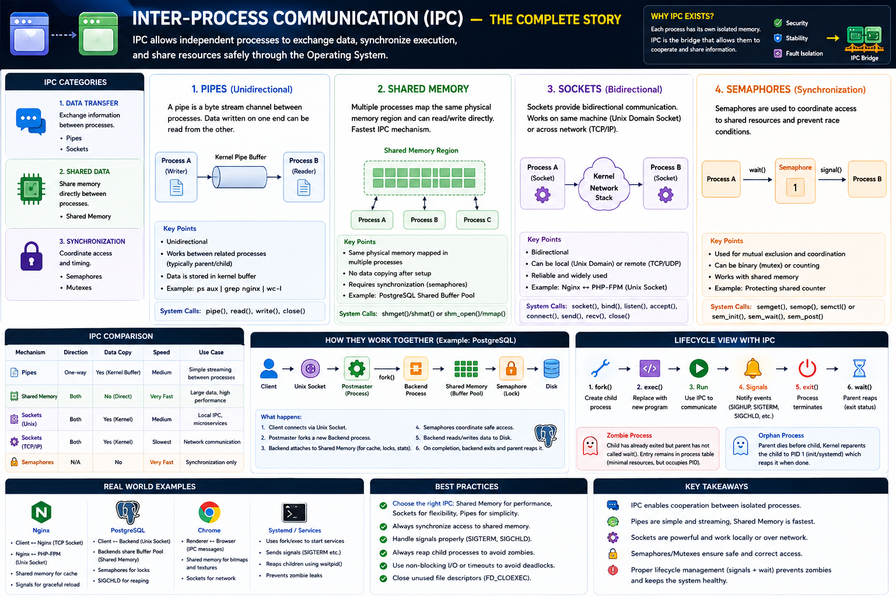

Pipes • Shared Memory • Sockets • Semaphores • Real-World Systems
Core Idea
Every process has its own isolated memory — they cannot touch each other's data. IPC is the OS-provided bridge that lets independent processes exchange data, synchronize work, and coordinate execution safely.
Data Transfer
Exchange information between processes
Pipes • Sockets
Shared Data
Share memory directly — no copying
Shared Memory
Synchronization
Coordinate access to shared resources
Semaphores • Mutexes
1. Pipes — Simple Kernel-Buffered Streams
A pipe is a unidirectional byte channel. Data written at one end is buffered in the kernel and read at the other. No synchronization needed — the kernel handles blocking.
Characteristics
System Calls
pipe() • read() • write() • close()
2. Shared Memory — Fastest IPC
Multiple processes map the same physical memory region into their address spaces. Reads and writes go directly to RAM — no kernel involvement per access after setup.
Characteristics
mmap()System Calls
shmget() • shmat() • shmdt() • mmap(MAP_SHARED)
PostgreSQL buffer pool: all backend processes read/write the same cached DB pages — zero copy. Memory would explode without shared memory.
3. Sockets — Flexible Bidirectional Comms
Sockets are bidirectional — locally via Unix Domain Sockets, or across machines via TCP/IP. Data travels through kernel buffers with all the associated overhead.
Unix Domain vs TCP Socket
| Feature | Unix Socket | TCP Socket |
|---|---|---|
| Scope | Same machine only | Local or remote |
| Overhead | Lower | Higher |
| Security | File permissions | IP-based ACL |
| Example | Nginx → PHP-FPM | App → DB server |
System Calls
socket() • bind() • listen() • accept() • send() • recv()
4. Semaphores — Synchronization Only
Semaphores don't transfer data — they coordinate access and prevent race conditions. A counter: wait() decrements it (acquire), signal() increments it (release).
Without synchronization
With semaphore
Types & System Calls
sem_init() • sem_wait() • sem_post() • semget() • semop()
IPC Mechanism Comparison
| Mechanism | Direction | Data Copy | Speed | Sync Needed? | Best For |
|---|---|---|---|---|---|
| Pipe | One-way | Kernel buffer | Medium | No | Simple streaming, parent ↔ child |
| Shared Memory | Both | None (direct) | Very Fast | Yes | Large datasets, high throughput |
| Unix Socket | Both | Kernel buffer | Medium | No | Local IPC, same-host microservices |
| TCP Socket | Both | Kernel buffer | Slowest | No | Cross-machine network communication |
| Semaphore | N/A | None | Very Fast | N/A | Synchronization only, no data |
How Real Systems Combine IPC Mechanisms
PostgreSQL
Unix socket for clients, shared memory for buffer cache, semaphores for lock table, signals for lifecycle.
Nginx + PHP-FPM
TCP for public traffic, Unix socket for local forward (faster), shared memory for PHP opcode cache.
Chrome Browser
Process-per-tab isolation. Shared memory for rendered frames (performance), IPC messages for control, sockets for network.
systemd (PID 1)
Uses every IPC mechanism together to manage all system services safely.
Staff Engineer Decision Framework
| Requirement | Best Choice |
|---|---|
| Parent ↔ Child stream | Pipe |
| Large shared dataset | Shared Memory + Semaphore |
| Same host, low latency | Unix Domain Socket |
| Cross-machine comms | TCP Socket |
| Synchronize shared data | Semaphore / Mutex |
| Async event notification | Signal |
| Replace local TCP | Unix Socket (fewer crossings) |
No single mechanism solves every problem. Real systems compose several — choose by performance, safety, and complexity.
Engineer Progression
Production Failure Scenarios
Shared memory corruption
Two processes write simultaneously without a lock. Data becomes inconsistent or corrupted. Fix: wrap every shared memory write in a semaphore or mutex.
High CPU from socket overhead
Millions of small TCP reads/writes drive context switches and kernel crossings. Fix: batch operations, or switch hot local data to shared memory.
Worker deadlock on semaphore
Process acquires lock then crashes — lock never released. All others block forever. Fix: lock ordering, timeouts, and deadlock watchdog threads.
Slow local communication via TCP
Using TCP between same-host processes adds unnecessary TCP stack overhead. Fix: replace with Unix Domain Sockets for lower latency and fewer copies.
Interview Cheat Sheet
Principal Engineer Takeaway
Pipes — simple, kernel-buffered, unidirectional; great for streaming between related processes
Shared Memory — fastest IPC, zero-copy after setup; always pair with a semaphore
Sockets — flexible and reliable; Unix for local, TCP across machines
Semaphores — synchronization only; prevent race conditions in shared regions
The Staff Engineer's responsibility is not simply choosing an IPC mechanism — it's selecting the one that provides the best balance of performance, scalability, fault isolation, synchronization complexity, and maintainability. Real systems always compose several IPC mechanisms together.
